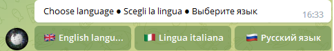
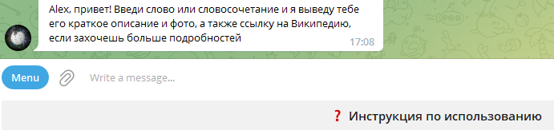
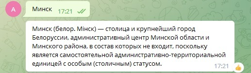
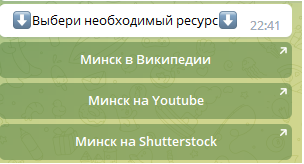
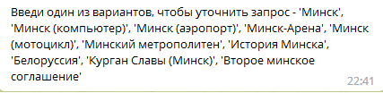
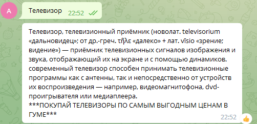
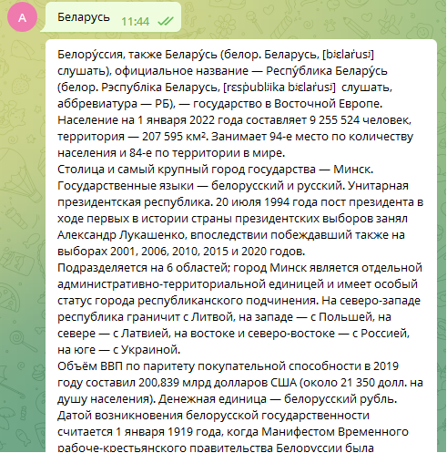

Автор Александр Романовский
Let’s begin!
Википедия является одним из крупнейших и наиболее популярных источников информации в Интернете
Расположена на сайте wikipedia.org, является свободной общедоступной мультиязычной универсальной интернет-энциклопедией. Создаётся на безвозмездной основе силами волонтёров — сообществом участников проекта, по установленным ими же правилам
Разбита на несколько разделов по языковому принципу с организационно независимым сообществом для каждого раздела, но общими ключевыми принципами, одинаковыми для всего проекта
С учетом роста популярности Telegram-ботов разработан проект WikiBot, позволяющий реализовать возможности Википедии посредством Telegram, а также расширить имеющиеся возможности
Бот является мультиязычным. В настоящее время реализована возможность выбора английского, итальянского и русского языков. Планируется добавить китайский язык и хинди с учетом потенциально огромного количества пользователей
После выбора языка посредством InlineKeyboardButton приветствие и вывод запросов реализуется на выбранном языке. Посредством KeyboardButton реализована возжность вывода инструкции по использованию бота
После ввода запроса выводится сообщение, содержащее краткое описание введенного слова или словосочетания
При необходимости прочтения полной статьи на Википедии, просмотра видео на Youtube или фотографий на Shutterstock выводятся Inline-кнопки, при нажатии на которые осуществляется переход на соответствующий ресурс
Дополнительно выводится сообщение с возможными вариантами запросов для уточнения
Для извлечения данных из Википедии использована библиотека Wikipedia Python, которая является оберткой для MediaWiki API
В данном проекте используются следующие методы функции wikipedia:
summary (): статья, для которой необходимо извлечь резюме, передается в качестве параметра этому методу. Вся сводка печатается в выходных данных. Для настроики количества предложений в сводном тексте, которое будет отображаться, используется аргумент sentences метода
set_lang(): для настройки необходимого языка страницы Википедии, если страница существует на выбранном языке. Каждый язык имеет стандартный префиксный код , который передается в качестве аргумента методу
search(): выполняет поиск в Википедии запроса, который предоставляется ему в качестве аргумента. В результате этот метод возвращает список всех заголовков статьи, содержащих запрос
page(‘’).url: для получения URL-адрес страницы Википедии, используется атрибут url. URL-адреса Youtube и shutterstock формируются на основании стандартного URL-адреса поиска для этих ресурсов: url=f"https://www.youtube.com/results?search_query={message.text}&sp=CAA%253D", url=f"https://www.shutterstock.com/ru/search/{message.text}"
Извлечение прибыли от проекта возможно за счет размещения рекламы в ответах на определенные запросы, также возможно использование геолокации (IP Geolocation API) для предложений рекламы из конкретных регионов
В стандартном боте PyWikiBot отсутствует возможность выбора языка, ответ на запрос формируется только одним большим сообщением, отсутствует дополнительный функционал
